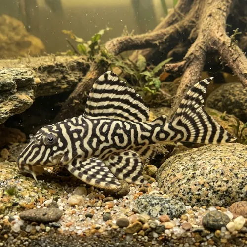

Nome popular principal
Cascudo Tigre King L333
Cascudo Tigre King L333, King Tiger Pleco, Cascudo L333, Hypancistrus L333
Ficha de peixe
Cascudos e Limpa-Fundos
Um dos cascudos mais cobiçados do gênero Hypancistrus, destacando-se pelas belas listras atigradas e porte médio adequado para diversos aquários.

Nome popular principal
Cascudo Tigre King L333, King Tiger Pleco, Cascudo L333, Hypancistrus L333
Nome científico
Nome técnico essencial para taxonomia, cruzamento de manejo e referência editorial consistente.
Dificuldade de manejo
Use este nível como referência inicial, sempre considerando volume, estabilidade e compatibilidade do aquário.
Seção 1
Seção 2
Seções 4 a 6
Cascudo Tigre King L333 tem hábito alimentar carnívoro. Excelente. 1 a 2 vezes ao dia (preferencialmente ao escurecer). Requer rações afundantes proteicas de alta qualidade para peixes de fundo, aceitando com entusiasmo alimentos congelados como tubifex, bloodworms e artêmias.
Machos adultos têm a cabeça mais larga, corpo mais afunilado e desenvolvem odontodes mais proeminentes nos raios das nadadeiras peitorais. Tipo de reprodução: Ovíparo. Dificuldade de reprodução: Intermediário. A desova ocorre no interior de cavernas estreitas. O macho atrai a fêmea para a toca, fertiliza os ovos e os guarda com dedicação até que os filhotes consumam o saco vitelino.
Alta. Substrato recomendado: Areia fina de rio com muitas cavernas de cerâmica ou pedras lisas empilhadas. Necessidade de esconderijos: Alta. Exige aquário enriquecido com diversas tocas de pedras ou tubos de cerâmica, além de boa filtragem e alta oxigenação dissolvida na água.
Seção 7
Nativo das águas quentes do Rio Xingu, necessita de aquecimento estável entre 26°C e 30°C e não tolera acúmulo de amônia ou nitrito.
Seção 8
Não, o L333 pertence ao gênero Hypancistrus, que tem hábitos carnívoro/onívoro e consome pouquíssima alga, exigindo alimentos ricos em proteína.
Em aquários adequados, o Cascudo Tigre King L333 atinge entre 12 e 15 cm de comprimento na fase adulta.
Os machos adultos possuem a cabeça mais larga em formato de V e apresentam cerdas (odontodes) bem mais desenvolvidas nas nadadeiras peitorais do que as fêmeas.